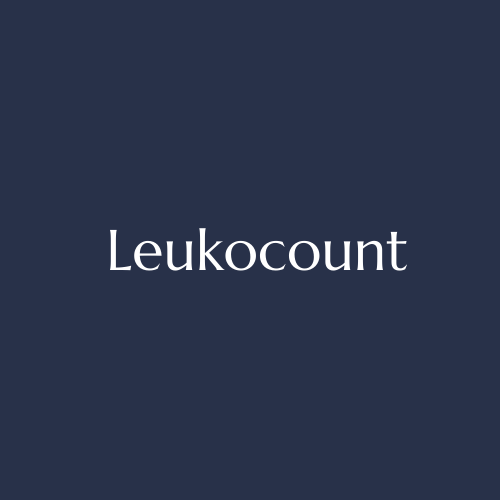
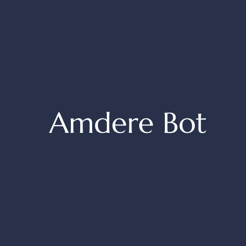
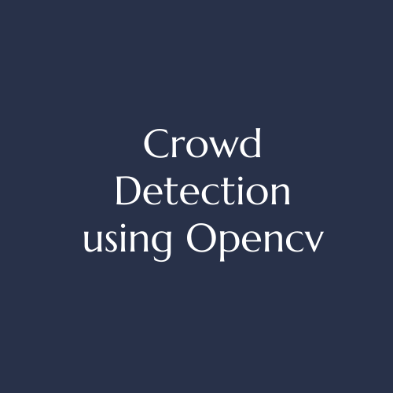
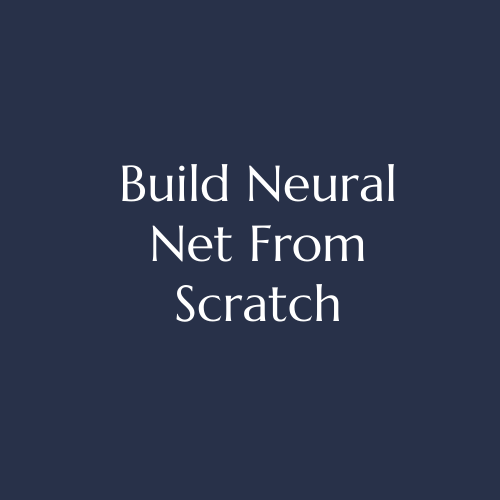

Projects
-

Leukocount aids in automating the diagnosis of blood-based diseases. It uses a deep learning architecture to identify and count different types of White Blood Cells present in a blood sample.
-

Amdere Bot is specialized in helping people who are suffering from depression by providing them messages of hope. It can also act as an aid to suicide helplines.
-

A DL model is used to count the number of people in an area and monitor the distance between them and if a crowd is detected then an alert is sent to the concerned authority.
-

Let's build a deep learning neural network from scratch, without using tensorflow or keras. This exercise will help you to get deep understanding of how a simple neural network works,how the weights and bias are calculated and how backpropagation is implemented to reduce the loss function. Finally how to make sure that your model demonstrates good performance.